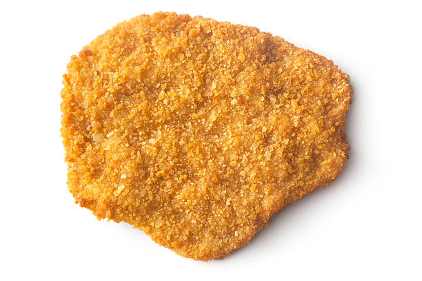

Receta
ingredientes
harina
pan rallado
pollo
huevo
sal
pimienta
ajo
aceite
perejil
procedimiento
- mezclar la harina con la sal y la pimienta
- mezclar el pan rallado con el ajo y perejil seco
- pasar las pechugas de pollo por la harina y el huevo batido, en este orden
- Freir las milanesas en abundante aceite un par de minutos por ambos lados
- Servir las milanesas de pollo recién hechas ¡y a disfrutar!
